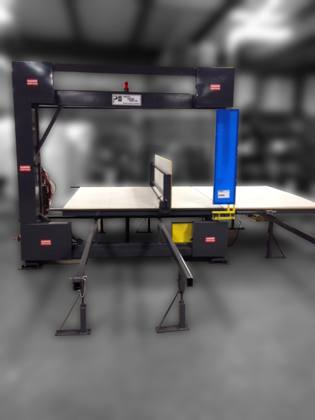

Show:
Spühl pocket-spring gluing line (dismantled) 12 items · 4 pcs · 11 set(s) of parts
 Representative photo
Representative photo Representative photo
Representative photoHot-melt glue melter (Robatech)
Piece do kleju Robatech
4 units counted; one more Robatech melter is listed with the line components.
Est. weight ≈ 0.3–1.0 t
4 pcsRef #3
Spring-string unwinder
Spring-string unwinder
Linia klejarska - rozwijarka do sprezyn
Unwinds the pocket-spring strings into the assembly line.
Est. weight ≈ 0.5–1.5 t
1 set(s) of partsRef #1
Pusher unit (KSM)
Pusher unit (KSM)
Linia klejarska - wypycharka KSM
Pushes the spring rows through the gluing section.
Est. weight ≈ 0.3–1.0 t
1 set(s) of partsRef #2
Gluing press
Gluing press
Linia klejarska - prasa i oslony
Line press with its safety guards.
Est. weight ≈ 1.5–4.0 t
1 set(s) of partsRef #4
Glue bridges
Glue bridges
Linia klejarska - mosty klejarskie
Glue application bridges of the line.
Est. weight ≈ 0.5–1.5 t
1 set(s) of partsRef #5
Gantry with grippers
Gantry with grippers
Linia klejarska - gantry + chwytaki
Overhead handling unit with grippers.
Est. weight ≈ 0.8–2.0 t
1 set(s) of partsRef #6
Feeding crane (Spühl)
Feeding crane (Spühl)
Linia klejarska - zuraw podawczy Spuhl
Spühl feeding crane of the line.
Est. weight ≈ 0.5–1.5 t
1 set(s) of partsRef #7
Line conveyors
Line conveyors
Linia klejarska - przenosniki
Conveyor sections of the line.
Est. weight ≈ 0.5–2.0 t
1 set(s) of partsRef #8
Control cabinets
Control cabinets
Linia klejarska - szafy sterownicze
Electrical control cabinets of the line.
Est. weight ≈ 0.3–0.8 t
1 set(s) of partsRef #9
Operator platforms
Operator platforms
Linia klejarska - podesty
Operator platforms and walkways.
Est. weight ≈ 0.5–1.5 t
1 set(s) of partsRef #10
Safety guards
Safety guards
Linia klejarska - oslony
Safety guarding panels of the line.
Est. weight ≈ 0.3–1.0 t
1 set(s) of partsRef #11
Other line components
Other line components
Linia klejarska - elementy
Further dismantled components of the line.
Est. weight ≈ 0.5–2.0 t
1 set(s) of partsRef #12
Packing & wrapping machines 5 items · 4 pcs · 2 set(s) of parts
 Representative photo
Representative photoPallet wrapping robot (Robopac)
Robot do owijania - Robopac FRD
Built 09/2004 and 08/2005.
Est. weight ≈ 0.5–0.8 t
2 pcsRef #15
 Representative photo
Representative photoPallet wrapping robot (Robopac)
Robot do owijania - Robopac S6
Year 2018.
Est. weight ≈ 0.2–0.3 t
1 pcsRef #13
Representative photoPallet wrapping robot (Robopac)
Robot do owijania - Robopac S6
Est. weight ≈ 0.2–0.3 t
1 pcsRef #14
 Representative photo
Representative photoFilm packing machine (KUPER)
Pakowarka KUPER - elementy + szafa sterownicza
Dismantled, with its control cabinet.
Est. weight ≈ 1.0–3.0 t
1 set(s) of partsRef #16
Mattress packing machine (DESCO)
Mattress packing machine (DESCO)
Pakowarka DESCO - elementy
Dismantled; model details on request.
Est. weight ≈ 1.0–3.0 t
1 set(s) of partsRef #17
Cutting, test & handling machines 4 items · 2 pcs · 2 set(s) of parts

Representative photoFoam band saw
Pila tasmowa do pianki
Est. weight ≈ 0.4–1.5 t
1 pcsRef #18
 Representative photo
Representative photoMattress durability test machine
Maszyna do lifetime test materace
Lifetime (durability) test rig for mattresses.
Est. weight ≈ 0.5–1.5 t
1 pcsRef #19
 Representative photo
Representative photoHandling manipulator (SIGMA)
Manipulator SIGMA - elementy
Est. weight ≈ 0.3–1.0 t
1 set(s) of partsRef #20
Tricot fabric machine
Tricot fabric machine
Maszyna do trico - elementy
Machine for tricot (knit) fabric; dismantled.
Est. weight ≈ 0.3–1.5 t
1 set(s) of partsRef #21
Sewing room machines 3 items · 32 pcs
 Representative photo
Representative photoLockstitch sewing machine
Maszyna do szycia stebnowka
Est. weight ≈ 0.9–1.7 t
19 pcsRef #22
 Representative photo
Representative photoOverlock sewing machine
Maszyna do szycia overlock
Est. weight ≈ 0.4–0.7 t
9 pcsRef #23
 Representative photo
Representative photoAutomatic strip / zip machine
Automaty do paskow/suwakow
Automatic machines for border strips and zips.
Est. weight ≈ 0.6–2.0 t
4 pcsRef #24
Conveyors & roller tables 5 items · 95 pcs
 Representative photo
Representative photoBelt conveyor for mattresses
Przenosniki tasmowe do materacow
Est. weight ≈ 6–16 t
40 pcsRef #25
 Representative photo
Representative photoRoller conveyor for mattresses
Przenosniki rolkowe do materacow
Est. weight ≈ 3.1–9.3 t
31 pcsRef #26
 Representative photo
Representative photoRoller table
Stoly rolkowe
Est. weight ≈ 0.8–2.5 t
17 pcsRef #27
 Representative photo
Representative photoSlat conveyor
Przenosnik klepkowy z Portugalii
Est. weight ≈ 0.5–2.0 t
1 pcsRef #29
 Representative photo
Representative photoSewing-room belt conveyor
Przenosniki tasmowe szwalnia - elementy
Conveyor sections from the sewing room.
Est. weight ≈ 0.3–1.2 t
6 pcsRef #28
Summary of contents
By completeness
| Status | Items | Quantity (pcs) | Share | Est. weight |
|---|---|---|---|---|
| Complete unit Free-standing machine or unit, counted per piece. | 13 | 131 | 95.6% | ≈ 15–40 t |
| Dismantled – components Machine dismantled into components; sold as found, parts not counted individually. | 16 | 6 + 15 set(s) of parts | 4.4% | ≈ 9–28 t |
| Total | 29 | 137 + 15 set(s) of parts | 100% | ≈ 24–68 t |
By product type
| Product type | Items | Quantity (pcs) | Share | Est. weight |
|---|---|---|---|---|
| Belt conveyor for mattresses | 1 | 40 | 29.2% | ≈ 6–16 t |
| Roller conveyor for mattresses | 1 | 31 | 22.6% | ≈ 3.1–9.3 t |
| Lockstitch sewing machine | 1 | 19 | 13.9% | ≈ 0.9–1.7 t |
| Roller table | 1 | 17 | 12.4% | ≈ 0.8–2.5 t |
| Overlock sewing machine | 1 | 9 | 6.6% | ≈ 0.4–0.7 t |
| Sewing-room belt conveyor | 1 | 6 | 4.4% | ≈ 0.3–1.2 t |
| Hot-melt glue melter (Robatech) | 1 | 4 | 2.9% | ≈ 0.3–1.0 t |
| Pallet wrapping robot (Robopac) | 3 | 4 | 2.9% | ≈ 1.0–1.5 t |
| Automatic strip / zip machine | 1 | 4 | 2.9% | ≈ 0.6–2.0 t |
| Foam band saw | 1 | 1 | 0.7% | ≈ 0.4–1.5 t |
| Mattress durability test machine | 1 | 1 | 0.7% | ≈ 0.5–1.5 t |
| Slat conveyor | 1 | 1 | 0.7% | ≈ 0.5–2.0 t |
| Spring-string unwinder | 1 | 1 set(s) of parts | – | ≈ 0.5–1.5 t |
| Pusher unit (KSM) | 1 | 1 set(s) of parts | – | ≈ 0.3–1.0 t |
| Gluing press | 1 | 1 set(s) of parts | – | ≈ 1.5–4.0 t |
| Glue bridges | 1 | 1 set(s) of parts | – | ≈ 0.5–1.5 t |
| Gantry with grippers | 1 | 1 set(s) of parts | – | ≈ 0.8–2.0 t |
| Feeding crane (Spühl) | 1 | 1 set(s) of parts | – | ≈ 0.5–1.5 t |
| Line conveyors | 1 | 1 set(s) of parts | – | ≈ 0.5–2.0 t |
| Control cabinets | 1 | 1 set(s) of parts | – | ≈ 0.3–0.8 t |
| Operator platforms | 1 | 1 set(s) of parts | – | ≈ 0.5–1.5 t |
| Safety guards | 1 | 1 set(s) of parts | – | ≈ 0.3–1.0 t |
| Other line components | 1 | 1 set(s) of parts | – | ≈ 0.5–2.0 t |
| Film packing machine (KUPER) | 1 | 1 set(s) of parts | – | ≈ 1.0–3.0 t |
| Mattress packing machine (DESCO) | 1 | 1 set(s) of parts | – | ≈ 1.0–3.0 t |
| Handling manipulator (SIGMA) | 1 | 1 set(s) of parts | – | ≈ 0.3–1.0 t |
| Tricot fabric machine | 1 | 1 set(s) of parts | – | ≈ 0.3–1.5 t |
| Total | 29 | 137 + 15 set(s) of parts | 100% | ≈ 24–68 t |
By group
| Group | Items | Quantity (pcs) | Share | Est. weight |
|---|---|---|---|---|
| Spühl pocket-spring gluing line (dismantled) | 12 | 4 + 11 set(s) of parts | 2.9% | ≈ 7–20 t |
| Packing & wrapping machines | 5 | 4 + 2 set(s) of parts | 2.9% | ≈ 3.0–7.5 t |
| Cutting, test & handling machines | 4 | 2 + 2 set(s) of parts | 1.5% | ≈ 1.5–5.5 t |
| Sewing room machines | 3 | 32 | 23.4% | ≈ 1.9–4.4 t |
| Conveyors & roller tables | 5 | 95 | 69.3% | ≈ 11–31 t |
| Total | 29 | 137 + 15 set(s) of parts | 100% | ≈ 24–68 t |
Shipping estimate
| Total volume (approx.) | ≈ 160–300 m³ |
| Total weight (approx.) | ≈ 24–68 t |
| 40′ High Cube containers | 3–5 |
| 20′ Standard containers | 6–11 |
Approximate: weights per line are estimates, the total is the sum of the lines. Conveyors and the dismantled gluing line take most of the volume; heavy line parts (press, gantry, crane) need crane/forklift loading and may need open-top or flat-rack containers. Final figures after a packing list on site.
Container capacity used: 40′ HC ≈ 68 m³ / 26.5 t, 20′ ≈ 28 m³ / 24 t (practical loading).
Container capacity used: 40′ HC ≈ 68 m³ / 26.5 t, 20′ ≈ 28 m³ / 24 t (practical loading).